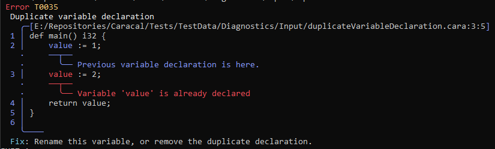
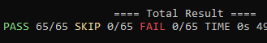
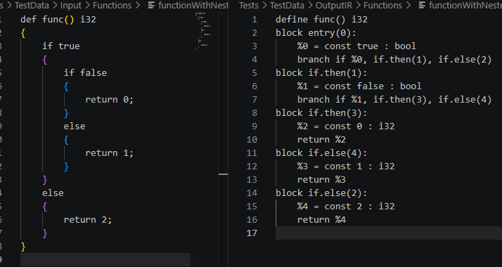
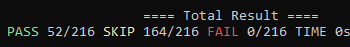

It has been a few weeks again and I finally integrated my CaraReport library into the compiler.
Progress on error reports #
The first thing I worked on since the last blog post was replacing the diagnostic TODOs in the lexer with nice error reports. The next step after that was adding diagnostics to the parser, most of the diagnostics here are for unexpected tokens. The biggest chunk of the work happened in the type checker where I added 40+ diagnostics.

I also realized i was handling annotations mostly in the parser because I didnt have a type checker at the time when I added them to the language. So I had to do some restructuring of the code to clean it up a bit.
A test suite for the diagnostics output was also added to make sure stuff works like expected, it currently covers 65 cases.

There are currently 2 lexer diagnostics, 7 parser diagnostics and 44 type checker diagnostics that i'm handling.
I'm quite happy with how they turned out so far but there are a few things i want to improve at a later point.
Work on the IR Layer #
My current task, as mentioned in the last post, is splitting up the current LLVM codegen into a separate IR layer. The first thing i did for that was adding a test suite and some basic classes for instructions and terminators.
I'm slowly working through the existing test files and lower the type checker result into my own IR layer. Functions with returns were the first thing I started with, external function declarations was also easy because they are basicly the same but only contain the function signature.
After that was arithmetic and control flow, which is a bit more tricky.

One of the reasons I wanted a separate IR layer is that the current LLVM codegen doesnt properly handle nested control flow and is not easy to work on. The new IR layer already handles this correctly, at least according to the test results.
The layer should also allow me to add optimizations in the future or allow for a different target than LLVM.
The IR test suite is currently passing for roughly 1/4 of my test files so far and I'm making nice progress on it.

Whats next #
The new IR layer needs more work and a new version of the LLVM codegen would be nice too so thats what I'm gonna work on next.
Armin